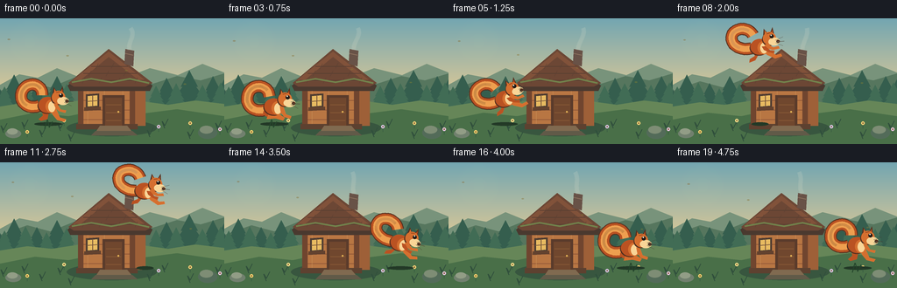
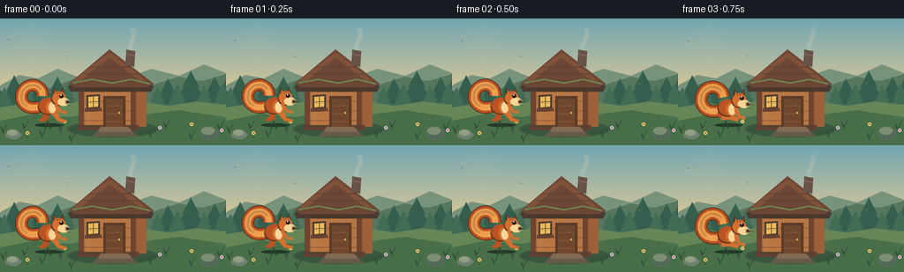

CODING AGENTS AS PIXEL WORLD MODELS
traex/GPT-5.6-Sol · dynamic_spatial_relationship_0024
点击播放 · 原生 RGB 像素
逐轮保存的候选
回放视频、检查图与代码变化。
每份候选均可单独播放。实际图片检查记录在下方工具轨迹中。
候选 01播放与检查图
点击播放 · 原生 RGB 像素

展开代码变化
--- 上一保存版本
+++ 本次保存版本
@@ -0,0 +1,304 @@
+from pathlib import Path
+import math
+
+import numpy as np
+from PIL import Image, ImageDraw, ImageFilter
+
+import artifact_io
+
+
+W, H, N = 256, 144, 20
+S = 4 # supersampling for clean illustrated edges
+
+
+def sc(v):
+ return int(round(v * S))
+
+
+def pts(seq):
+ return [(sc(x), sc(y)) for x, y in seq]
+
+
+def ellipse(d, box, fill, outline=None, width=1):
+ d.ellipse(tuple(sc(v) for v in box), fill=fill, outline=outline, width=sc(width) if outline else 1)
+
+
+def polygon(d, xy, fill, outline=None):
+ d.polygon(pts(xy), fill=fill, outline=outline)
+
+
+def line(d, xy, fill, width=1, joint="curve"):
+ d.line(pts(xy), fill=fill, width=sc(width), joint=joint)
+
+
+def bezier(p0, p1, p2, p3, count=28):
+ out = []
+ for t in np.linspace(0, 1, count):
+ u = 1 - t
+ out.append((u**3*p0[0] + 3*u*u*t*p1[0] + 3*u*t*t*p2[0] + t**3*p3[0],
+ u**3*p0[1] + 3*u*u*t*p1[1] + 3*u*t*t*p2[1] + t**3*p3[1]))
+ return out
+
+
+def smoothstep(t):
+ t = max(0.0, min(1.0, t))
+ return t * t * (3 - 2 * t)
+
+
+def make_background():
+ # Painterly dawn sky and warm clearing.
+ yy = np.arange(H * S)[:, None] / S
+ top = np.array([115, 166, 177], dtype=float)
+ bot = np.array([239, 207, 146], dtype=float)
+ a = np.clip(yy / 103, 0, 1)[..., None]
+ rgb = top * (1-a) + bot * a
+ rgb = np.repeat(rgb, W*S, axis=1)
+ img = Image.fromarray(np.uint8(np.clip(rgb, 0, 255)), "RGB")
+ d = ImageDraw.Draw(img)
+
+ # Sun glow, softened behind the forest.
+ glow = Image.new("RGBA", img.size, (0, 0, 0, 0))
+ gd = ImageDraw.Draw(glow)
+ for r in range(30, 2, -2):
+ alpha = int(2 + (30-r) * .22)
+ ellipse(gd, (34-r, 28-r, 34+r, 28+r), (255, 238, 177, alpha))
+ glow = glow.filter(ImageFilter.GaussianBlur(sc(5)))
+ img = Image.alpha_composite(img.convert("RGBA"), glow).convert("RGB")
+ d = ImageDraw.Draw(img)
+
+ # Distant rolling hills.
+ polygon(d, [(0,76),(22,64),(43,68),(65,57),(87,66),(113,54),(145,67),(171,57),(203,65),(231,52),(256,62),(256,111),(0,111)], "#78937b")
+ polygon(d, [(0,83),(31,72),(57,79),(87,67),(113,75),(145,64),(174,75),(202,66),(229,71),(256,63),(256,110),(0,110)], "#56765e")
+
+ # Pine silhouettes with varied depth.
+ def pine(x, y, h, col):
+ line(d, [(x,y-h*.72),(x,y+2)], col, 1)
+ for q, width in ((.80,.22),(.61,.31),(.42,.40),(.22,.48)):
+ cy = y-h*q
+ polygon(d, [(x,cy-h*.19),(x-width*h,cy+h*.24),(x+width*h,cy+h*.24)], col)
+ for x, h in [(-5,32),(16,39),(42,29),(65,37),(190,35),(216,44),(243,37),(262,46)]:
+ pine(x, 103, h, "#355e4e")
+ for x, h in [(5,26),(29,31),(53,24),(76,29),(178,27),(201,30),(231,28),(252,31)]:
+ pine(x, 104, h, "#416c55")
+
+ # Ground bands.
+ polygon(d, [(0,101),(31,96),(59,99),(91,94),(121,98),(156,94),(192,99),(223,94),(256,98),(256,144),(0,144)], "#668658")
+ polygon(d, [(0,116),(40,108),(78,112),(112,105),(155,110),(202,104),(256,112),(256,144),(0,144)], "#496f48")
+
+ # Hut shadow gives it weight in the clearing.
+ ellipse(d, (76,116,179,135), "#38563f")
+
+ # Hut side and front wall.
+ polygon(d, [(91,73),(154,72),(166,82),(166,123),(94,123)], "#9e6038")
+ polygon(d, [(91,73),(151,73),(151,124),(91,124)], "#b87643")
+ # Horizontal hand-hewn planks.
+ for y in [83,94,105,116]:
+ line(d, [(93,y),(149,y)], "#8c5336", .7)
+ for x in [100,119,140]:
+ line(d, [(x,76),(x,122)], "#c68a54", .6)
+ # Corner beams and sill.
+ polygon(d, [(89,72),(95,73),(95,125),(89,124)], "#70452f")
+ polygon(d, [(148,72),(154,72),(154,124),(148,124)], "#70452f")
+ polygon(d, [(87,121),(157,121),(157,127),(87,127)], "#5d4130")
+
+ # Roof: dark underside, moss, then warm shingles.
+ polygon(d, [(77,77),(124,37),(174,77),(171,83),(80,83)], "#4a392f")
+ polygon(d, [(78,74),(124,35),(174,74),(166,78),(84,78)], "#6c4735")
+ polygon(d, [(83,71),(124,38),(167,72),(160,72),(124,44),(90,72)], "#81523a")
+ # Shingle courses.
+ for a0, a1, y in [(104,146,55),(95,156,63),(86,166,71)]:
+ line(d, [(a0,y),(a1,y)], "#563d32", .8)
+ for x,y in [(112,52),(130,51),(104,60),(124,60),(144,60),(97,68),(116,68),(137,68),(157,68)]:
+ line(d, [(x,y),(x-3,y+6)], "#5f4233", .7)
+ line(d, [(82,73),(104,69),(127,73),(148,69),(170,74)], "#71814b", 2)
+
+ # Chimney and tiny smoke base.
+ polygon(d, [(143,35),(153,37),(152,55),(142,52)], "#685247")
+ line(d, [(143,40),(152,42)], "#8f7460", 1)
+
+ # Door and fittings.
+ polygon(d, [(117,88),(142,88),(142,123),(117,123)], "#5a3b2b")
+ polygon(d, [(120,91),(139,91),(139,123),(120,123)], "#70472e")
+ for y in [99,108,117]:
+ line(d, [(121,y),(138,y)], "#8b5b37", .7)
+ ellipse(d, (134,106,136,108), "#e2b255")
+ # Window on the left with golden panes.
+ polygon(d, [(98,87),(113,86),(113,102),(98,103)], "#4b3b31")
+ polygon(d, [(100,89),(111,88),(111,100),(100,101)], "#e8bb61")
+ line(d, [(105.5,88),(105.5,101)], "#76543a", 1)
+ line(d, [(99,95),(112,94)], "#76543a", 1)
+ polygon(d, [(96,102),(115,101),(115,105),(96,106)], "#63422f")
+
+ # Steps and foreground stones.
+ polygon(d, [(114,123),(145,123),(150,129),(110,129)], "#806a50")
+ polygon(d, [(109,129),(151,129),(157,134),(104,134)], "#615a48")
+ ellipse(d, (6,127,24,137), "#71806e")
+ ellipse(d, (8,126,20,133), "#929d86")
+ ellipse(d, (226,124,248,138), "#536b59")
+ ellipse(d, (228,123,243,132), "#7e8d75")
+
+ # Grass tufts and little flowers frame the action without clutter.
+ for x,y in [(4,123),(28,119),(48,128),(69,121),(81,133),(171,128),(188,118),(217,130),(249,120)]:
+ line(d, [(x,y+8),(x-3,y),(x,y+5),(x+4,y-3)], "#304f3c", 1)
+ for x,y,c in [(31,129,"#f1cf6c"),(73,116,"#f3df8a"),(181,123,"#d8c5e8"),(217,119,"#f0cf75"),(251,126,"#e5c2dc")]:
+ line(d, [(x,y+7),(x,y+1)], "#385c42", .8)
+ ellipse(d, (x-2,y-1,x+2,y+3), c)
+ ellipse(d, (x-.7,y+.3,x+.7,y+1.7), "#80633b")
+ return img
+
+
+def add_atmosphere(img, frame):
+ lay = Image.new("RGBA", img.size, (0,0,0,0))
+ d = ImageDraw.Draw(lay)
+ # Slow chimney smoke changes shape on every frame.
+ phase = frame * .22
+ smoke = bezier((148,36),(145+3*math.sin(phase),27),(153+4*math.sin(phase+.8),20),(149+5*math.sin(phase*1.2),11), 24)
+ line(d, smoke, (224,224,208,42), 5)
+ line(d, smoke, (242,235,210,38), 2)
+ # A few drifting leaf specks imply a living environment.
+ for j in range(4):
+ x = (17 + j*67 + frame*(.42+j*.06)) % 270 - 7
+ y = 24 + j*17 + 2*math.sin(frame*.35+j)
+ ellipse(d, (x-1.4,y-.7,x+1.4,y+.7), (134,104+8*j,51,110))
+ return Image.alpha_composite(img.convert("RGBA"), lay)
+
+
+def squirrel_sprite(pose="stand", frame=0):
+ # Center of this transparent tile is close to the animal's body center.
+ im = Image.new("RGBA", (sc(82), sc(64)), (0,0,0,0))
+ d = ImageDraw.Draw(im)
+ russet = (186,82,34,255)
+ orange = (213,111,47,255)
+ light = (238,159,79,255)
+ cream = (249,213,151,255)
+ dark = (84,48,32,255)
+
+ # Bushy tail, painted with broad nested curves; the outer dark rim is readable at 256px.
+ if pose == "air":
+ tail = bezier((31,34),(19,36),(7,28),(10,18),14) + bezier((10,18),(13,8),(30,8),(34,19),15)[1:]
+ elif pose == "crouch":
+ tail = bezier((31,37),(16,41),(8,31),(12,19),14) + bezier((12,19),(17,7),(34,9),(35,22),15)[1:]
+ else:
+ tail = bezier((31,34),(17,39),(7,29),(12,17),14) + bezier((12,17),(18,5),(35,9),(34,22),15)[1:]
+ line(d, tail, dark, 14)
+ line(d, tail, russet, 12)
+ line(d, tail, light, 7)
+ line(d, tail[5:-3], (234,145,66,210), 3)
+
+ # Pose-specific hind limbs are behind the torso.
+ if pose == "air":
+ polygon(d, [(34,37),(41,38),(34,48),(27,50),(28,46),(34,43)], russet)
+ polygon(d, [(44,37),(50,37),(58,44),(64,43),(65,46),(57,48),(48,43)], orange)
+ elif pose in ("crouch", "land"):
+ ellipse(d, (29,35,45,45), russet)
+ polygon(d, [(35,41),(48,42),(53,45),(51,48),(43,46),(33,47)], orange)
+ else:
+ polygon(d, [(34,38),(42,39),(40,49),(33,51),(30,49),(35,45)], russet)
+ polygon(d, [(44,38),(50,38),(54,47),(61,49),(59,52),(51,50),(46,44)], orange)
+
+ # Body, pale belly and shoulder.
+ ellipse(d, (29,25,51,43), dark)
+ ellipse(d, (30,24,51,42), russet)
+ ellipse(d, (38,27,51,42), orange)
+ ellipse(d, (41,29,49,41), cream)
+
+ # Head and pointed ears.
+ polygon(d, [(45,25),(47,13),(53,21)], dark)
+ polygon(d, [(47,24),(48,15),(52,22)], orange)
+ polygon(d, [(52,22),(57,12),(59,26)], dark)
+ polygon(d, [(53,23),(56.5,15),(58,25)], russet)
+ ellipse(d, (44,18,60,33), dark)
+ ellipse(d, (45,17,60,32), orange)
+ ellipse(d, (51,24,64,33), cream)
+ ellipse(d, (60,27,64,30.5), dark)
+ # Eye, highlight, brow.
+ ellipse(d, (53,20,57.5,24.5), (35,28,24,255))
+ ellipse(d, (54,20.3,55.4,21.7), (255,245,211,255))
+ line(d, [(50,19),(54,18)], (125,55,27,255), .8)
+
+ # Forelegs sell the jump direction.
+ if pose == "air":
+ polygon(d, [(46,31),(50,31),(56,35),(62,34),(63,37),(55,38),(48,35)], orange)
+ polygon(d, [(43,33),(47,33),(52,38),(57,39),(56,42),(50,40),(45,37)], russet)
+ elif pose in ("crouch", "land"):
+ polygon(d, [(47,32),(51,33),(54,41),(60,43),(59,46),(52,44),(48,38)], orange)
+ else:
+ polygon(d, [(47,31),(51,32),(55,38),(61,39),(60,42),(53,40),(49,36)], orange)
+
+ # Fine whiskers.
+ line(d, [(59,27),(68,24)], (72,59,48,180), .55)
+ line(d, [(60,29),(69,29)], (72,59,48,180), .55)
+ line(d, [(59,30),(67,34)], (72,59,48,160), .55)
+ return im
+
+
+def paste_squirrel(scene, x, y, pose, angle=0, scale=1.0, frame=0):
+ sprite = squirrel_sprite(pose, frame)
+ if abs(scale-1) > 1e-4:
+ sprite = sprite.resize((int(sprite.width*scale), int(sprite.height*scale)), Image.Resampling.LANCZOS)
+ if abs(angle) > .01:
+ sprite = sprite.rotate(angle, resample=Image.Resampling.BICUBIC, expand=True)
+ # Body center is approximately at (45,31) in the unrotated tile; centering gives stable animation.
+ px = sc(x) - sprite.width//2
+ py = sc(y) - sprite.height//2
+ scene.alpha_composite(sprite, (px,py))
+
+
+def squirrel_motion(i):
+ # Explicit three-act blocking: left hold, airborne crossing, right hold.
+ if i <= 2:
+ return 55 + .7*math.sin(i*.8), 98 - .5*math.sin(i*1.2), "stand", 0, 1.02
+ if i == 3:
+ return 57, 100, "crouch", -2, 1.04
+ if i == 4:
+ return 61, 101, "crouch", 5, .98
+ if 5 <= i <= 14:
+ t = (i-5)/9
+ # Smooth horizontal crossing and a pronounced parabolic leap above the roof peak.
+ x = 64 + 137*smoothstep(t)
+ y = 91 - 67*(4*t*(1-t))
+ angle = 16*(1-2*t) # nose rises, then points down
+ return x, y, "air", angle, 1.0
+ if i == 15:
+ return 205, 99, "land", -5, 1.06
+ if i == 16:
+ return 208, 97, "crouch", 0, 1.03
+ return 211 + .5*math.sin(i), 94 - .6*math.sin(i*.7), "stand", 0, 1.02
+
+
+def generate():
+ bg = make_background()
+ frames = []
+ for i in range(N):
+ scene = add_atmosphere(bg.copy(), i)
+ d = ImageDraw.Draw(scene)
+ x, y, pose, angle, scale = squirrel_motion(i)
+
+ # Moving contact/cast shadow: detached and faint in midair, tight at both endpoints.
+ if 5 <= i <= 14:
+ t = (i-5)/9
+ ground_x = x
+ shadow_w = 15 - 6*math.sin(math.pi*t)
+ alpha = int(75 - 38*math.sin(math.pi*t))
+ else:
+ ground_x, shadow_w, alpha = x, 16, 80
+ ellipse(d, (ground_x-shadow_w, 119, ground_x+shadow_w, 123), (35,57,39,alpha))
+
+ paste_squirrel(scene, x, y, pose, angle, scale, i)
+
+ # Foreground grass overlaps the feet at the endpoints for stronger grounding.
+ d = ImageDraw.Draw(scene)
+ if i <= 4:
+ line(d, [(51,126),(54,116),(56,125),(60,118)], (38,73,45,210), 1)
+ if i >= 15:
+ line(d, [(205,126),(208,115),(211,125),(215,117)], (35,68,43,210), 1)
+
+ frame = scene.convert("RGB").resize((W,H), Image.Resampling.LANCZOS)
+ frames.append(np.asarray(frame, dtype=np.uint8))
+ return np.stack(frames)
+
+
+if __name__ == "__main__":
+ case_dir = Path(__file__).resolve().parent
+ artifact_io.save(generate(), case_dir)
+
候选 02播放与检查图
点击播放 · 原生 RGB 像素


展开代码变化
--- 上一保存版本
+++ 本次保存版本
@@ -53,7 +53,7 @@
a = np.clip(yy / 103, 0, 1)[..., None]
rgb = top * (1-a) + bot * a
rgb = np.repeat(rgb, W*S, axis=1)
- img = Image.fromarray(np.uint8(np.clip(rgb, 0, 255)), "RGB")
+ img = Image.fromarray(np.uint8(np.clip(rgb, 0, 255)))
d = ImageDraw.Draw(img)
# Sun glow, softened behind the forest.
可观测工具轨迹
实际执行的命令与返回图片。
命令 1exit 0
/bin/bash -lc "cat prompt.txt && printf '\\n--- GENERATION_RULES.md ---\\n' && cat GENERATION_RULES.md"
命令 2exit 0
/bin/bash -lc "cat task_spec.json && printf '\\n--- FILES ---\\n' && find . -maxdepth 2 -type f -printf '%p %s bytes\\n' | sort"
命令 3exit 0
/bin/bash -lc "sed -n '1,260p' artifact_io.py"
命令 4exit 0
/bin/bash -lc "python generate.py && python - <<'PY'
import json, numpy as np
from PIL import Image
z=np.load('pixels.npz')['pixels']
print('pixels:', z.shape, z.dtype, 'frames:',len(list(__import__('pathlib').Path('frames').glob('*.png'))))
for i in [0,3,5,9,14,16,19]:
im=Image.open(f'frames/{i:02}.png')
print(i, im.mode, im.size, np.asarray(im).mean(axis=(0,1)).round(1))
PY
ls -lh pixels.npz inspection.png index.html frames/00.png"命令 5exit 0
/bin/bash -lc "python generate.py && python - <<'PY'
from pathlib import Path
import numpy as np
from PIL import Image
arr=[]
paths=sorted(Path('frames').glob('*.png'))
assert len(paths)==20
for p in paths:
a=np.asarray(Image.open(p))
assert a.shape==(144,256,3) and a.dtype==np.uint8
arr.append(a)
a=np.stack(arr)
assert a.shape==(20,144,256,3)
d=np.mean(np.abs(a[1:].astype(np.int16)-a[:-1].astype(np.int16)),axis=(1,2,3))
print('validated',a.shape,a.dtype,'frame-diff range',round(float(d.min()),3),round(float(d.max()),3))
print('outputs', {p.name:p.stat().st_size for p in [Path('pixels.npz'),Path('index.html'),Path('inspection.png')]})
PY"视觉工具实际返回图片 1

保存候选 2 份；完成命令 5 次；可验证图片返回 1 张。原始 API 响应与完整日志保留在本地。